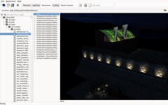
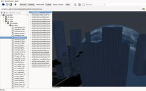
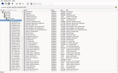

This page provides a collection of tools for Dreamfall. DFToolBox and DFModTool are developed here, the other downloads are a backup in case the original download links disappear and might be outdated. If you know tools not listed here or know a newer version let me know.
DFToolBox



DFToolBox is a viewer and extractor for the .pak files that contain Dreamfall's data, with command line tools to convert and replace them.
Features:
- browse the files by pak or sorted by type
- 3D preview of locations, characters and objects, with animations
- export files as they are, or convert them: textures and normal maps to PNG, scripts and shaders to text
- view textures, look into scripts and shaders
- listen to music, sound effects and dialog, with the text of the voice lines
- convert localization.dat to .po files and back, for translations
- compile and decompile Shark3D files
- replace files inside the .paks
Available for 64-bit Windows and Linux. What changed is in the NEWS, how much of the game's data is understood in the README.
Download
- dftoolbox-0.2.0-win64.zip (Windows, 64-bit)
- Source code
On Linux it can be run with Nix or built with CMake and Qt 6:
nix run github:DFModding/dftoolbox
Old versions
From 2006, using the old FOX interface:
- dftoolbox-2006-10-30-1.zip
- dftoolbox-2006-05-31.zip
- dftoolbox-2006-05-30.zip
- dftoolbox-2006-05-27.zip
DFModTool

 DFModTool allows you to manage modification for Dreamfall,
more precisely it allows you to replace files inside the
.pak archives of Dreamfall.
DFModTool allows you to manage modification for Dreamfall,
more precisely it allows you to replace files inside the
.pak archives of Dreamfall.
Features:
- display a little description and picture for each modification
- select/deselect modifications
- install and uninstall modifications
Download
DFModTool is part of DFToolBox.
DreamView


DreamView is a viewer for the 3D models and animations from Dreamfall.
Features:
- browse through 3D models
- display 3D models and allow to fly through them
- export 3D models to DirectX, Milkshape or HalfLife2
- import 3D models into the game
Download
- dreamview-2007-05-31.zip
- dreamview_src-2007-05-31.zip
- dreamview-2007-05-02.zip
- dreamview_src-2007-05-02.zip
Dreamfall Trainer


Links
- DreamView source code - current version of the viewer and exporter for Dreamfall models
- DreamfallTLJViewer - exports meshes and textures to FBX
- TLJWiki - The Longest Journey and Dreamfall Wiki
- TLJ Viewer - resource viewer for The Longest Journey
- The Longest Journey Forums